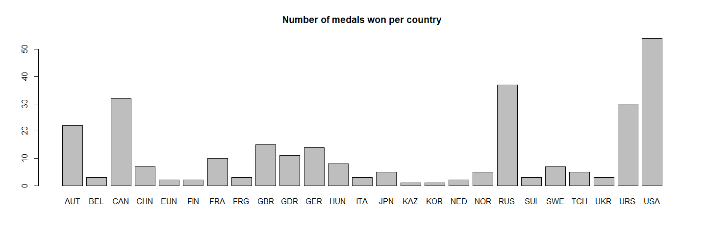
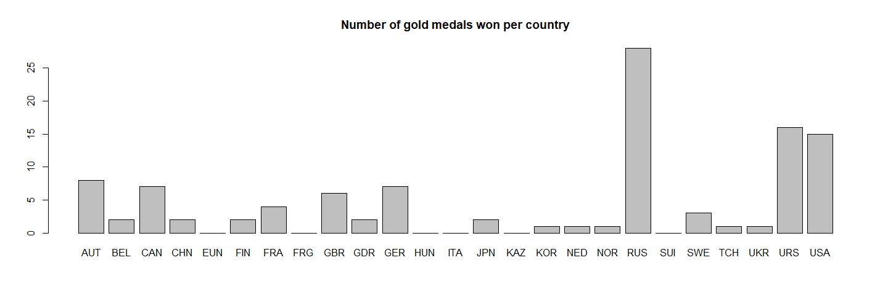
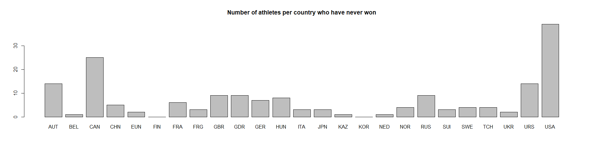

Analysing medals won per athlete/per country with R
Today I am introducing a sneaky little data analysis using R on figure skating in the olympics. I have already written a piece on Figure skating and what I think is going to happen in the upcoming olympics. But I also want to look back at athletes who have competed and won a medal in the past Olympics. If you’ve never heard of data science, this is how you can make very easy analysis of your favorite things in the world! I am going to look at the medals won using data from the official Olympics database website. First I formatted the data to make it a csv (comma separated values) file which is very easy to parse in R
Total number of athletes that have won at least a medal per country

This first plot represents the total number of medals per country over all the years they participated. Figure skating has been part of the winter Games since the beginning but not all nations have participated since the start, and some countries don’t exist any more but they are still represented under their official name of the time, for example the USSR. Looking at the plot, the first thing we notice are the highest scoring nations: USA, Russia (both modern and USSR with the code USR), Canada, Austria. Let’s dig deeper into what kind of medals each country mostly wins to see if certain countries are better:
Number of gold medals per country

Here we see a clear difference with the previous plot: Russia clearly dominates the sport, more than twice the amount compared to any other country if you count Russia+USSR wins. My own country France is pretty low in that plot, which is a little sad, but our technique is just notas good as the Russians! Another thing I noted is Canada is not doing so well, which I was surprised about. Now let’s zoom in on the athletes that are so good they won multiple times:
Athletes that have won multiple times
| rank | Athlete | NationID | G | S | B |
|---|---|---|---|---|---|
| 1 | Gillis Grafström | SWE | 3 | 1 | 0 |
| 2 | Sonja Henie | NOR | 3 | 0 | 0 |
| 2 | Irina Rodnina | URS | 3 | 0 | 0 |
| 4 | Yevgeny Plushenko | RUS | 2 | 2 | 0 |
| 5 | Artur Dmitriev | RUS | 2 | 1 | 0 |
| 6 | Andree Brunet | FRA | 2 | 0 | 1 |
| 6 | Pierre Brunet | FRA | 2 | 0 | 1 |
| 8 | Yekaterina Gordeyeva | RUS | 2 | 0 | 0 |
| 8 | Aleksandr Zaitsev | URS | 2 | 0 | 0 |
| 8 | Maxim Trankov | RUS | 2 | 0 | 0 |
| 8 | Oksana Grishuk | RUS | 2 | 0 | 0 |
| 8 | Lyudmila Belousova | URS | 2 | 0 | 0 |
| 8 | Richard Button | USA | 2 | 0 | 0 |
| 8 | Sergei Grinkov | RUS | 2 | 0 | 0 |
| 8 | Katarina Witt | GDR | 2 | 0 | 0 |
| 8 | Tatiana Volosozhar | RUS | 2 | 0 | 0 |
| 8 | Yevgeny Platov | RUS | 2 | 0 | 0 |
| 8 | Oleg Protopopov | URS | 2 | 0 | 0 |
| 8 | Karl Schäfer | AUT | 2 | 0 | 0 |
France is on the list! Most of those on the list are Russian, but number 1 and 2 are from Sweden and Norway. Gillis Grafström is the most successful skater at the olympics, but passed away in 1938. Norwegian Sonja Henie was also a very successful skater and celebrity and left us in 1969. Irina Rodnina is retired from competition and is now doing politics. So it’s up to the new generations to attempt to be as good as them!
French athletes with medals
Since I am french and I used to skate in France, I’m very interested in how we did over the years so here are all the french athletes who have won at least a medal in the order they are scored according to how many and which color their medals were.
| rank | Athlete | NationID | G | S | B | |
|---|---|---|---|---|---|---|
| 6 | 6 | Andree Brunet | FRA | 2 | 0 | 1 |
| 7 | 6 | Pierre Brunet | FRA | 2 | 0 | 1 |
| 43 | 43 | Gwendal Peizerat | FRA | 1 | 0 | 1 |
| 48 | 43 | Marina Anissina | FRA | 1 | 0 | 1 |
| 138 | 126 | Paul Duchesnay | FRA | 0 | 1 | 0 |
| 173 | 126 | Isabelle Duchesnay-Dean | FRA | 0 | 1 | 0 |
| 190 | 126 | Alain Calmat | FRA | 0 | 1 | 0 |
| 207 | 201 | Philippe Candeloro | FRA | 0 | 0 | 2 |
| 212 | 201 | Patrick Pera | FRA | 0 | 0 | 2 |
| 266 | 214 | Jacqueline du Bief | FRA | 0 | 0 | 1 |
We have got 10 french athletes who have won medals in history, and when I started skating it was when the Marina and Gwendal couple were very famous in France and I wanted to be like them. Andree and Pierre Brunet were also a very famous couple and revolutionized the sport at the time, they are proper legends. So France is not looking too shabby, that’s a relief! Let’s look at those athletes who don’t get as much attention, the ones who have not won the olympics:
Athletes who have not won a gold medal

We notice that there is a very high number of athletes from USA who never won gold, more than in any country. However we know they also enter the highest number of athletes because they have the budget to send as many athletes as possible and not just the ones they know will win, so it is because of that. To showcase that more, let’s look at the proportions of winning athletes per country:

Overall there is of the athletes that have won at least a medal in their career that won gold at least once, and some countries have very few medal winning athletes, Korea has only one athlete that won medals and she won gold once, and Finland has had 2 that also both won so they both have a 100% win rate of medal winning athletes because their sample is small therefore it is biased. Otherwize Russia, of course, and its close neighbour Belarus have the highest proportion of gold medals per medal-winning athlete.
Best scoring athletes at the olympics
I am using a different database here which is from the ISU (International skating Union) and holds all the personal best of athletes. Because this article is about the olympics, I will focus on athletes that have had their personal best at Olympic events. This is biased in the sense that not all athletes have their personal Best during an Olympic event, because it’s so much pressure it can be difficult to do your best, but as I am interested in what happens at an Olympic event, I think it’s fitting to use this set of data. This data represents athletes that do their best in this event.
Ladies’ performances
## Parsed with column specification:
## cols(
## rank = col_integer(),
## Name = col_character(),
## NationID = col_character(),
## Event = col_character(),
## Date = col_character(),
## Score = col_double(),
## Category = col_character()
## )
| rank | Name | NationID | Event | Date | Score | Category | |
|---|---|---|---|---|---|---|---|
| 2 | 2 | Yuna KIM | KOR | XXI Olympic Winter Games 2010 | 25.02.2010 | 228.56 | S |
| 3 | 3 | Adelina SOTNIKOVA | RUS | XXII Olympic Winter Games 2014 | 20.02.2014 | 224.59 | S |
| 9 | 9 | Carolina KOSTNER | ITA | XXII Olympic Winter Games 2014 | 20.02.2014 | 216.73 | S |
| 24 | 24 | Joannie ROCHETTE | CAN | XXI Olympic Winter Games 2010 | 25.02.2010 | 202.64 | S |
| 46 | 46 | Shizuka ARAKAWA | JPN | XX Olympic Winter Games 2006 | 23.02.2006 | 191.34 | S |
| 52 | 52 | Laura LEPISTÖ | FIN | XXI Olympic Winter Games 2010 | 25.02.2010 | 187.97 | S |
| 64 | 64 | Rachael FLATT | USA | XXI Olympic Winter Games 2010 | 25.02.2010 | 182.49 | S |
| 87 | 87 | Mae Berenice MEITE | FRA | XXII Olympic Winter Games 2014 | 20.02.2014 | 174.53 | S |
| 89 | 89 | Valentina MARCHEI | ITA | XXII Olympic Winter Games 2014 | 20.02.2014 | 173.33 | S |
| 95 | 95 | Ksenia MAKAROVA | RUS | XXI Olympic Winter Games 2010 | 25.02.2010 | 171.91 | S |
| 119 | 119 | Diana NIKITINA | LAT | Youth Olympic Games 2016 | 16.02.2016 | 165.60 | J |
| 174 | 172 | Min-Jeong KWAK | KOR | XXI Olympic Winter Games 2010 | 25.02.2010 | 155.53 | S |
| 295 | 288 | Cheltzie LEE | AUS | XXI Olympic Winter Games 2010 | 25.02.2010 | 138.16 | S |
| 312 | 304 | Anais VENTARD | FRA | Youth Olympic Games 2012 | 17.01.2012 | 136.08 | J |
| 316 | 308 | Vanna GIANG | USA | Youth Olympic Games 2016 | 16.02.2016 | 135.65 | J |
| 328 | 320 | Lucrezia GENNARO | ITA | Youth Olympic Games 2016 | 16.02.2016 | 134.18 | J |
| 441 | 430 | Jordan BAUTH | USA | Youth Olympic Games 2012 | 17.01.2012 | 123.39 | J |
| 481 | 468 | Silvia FONTANA | ITA | XX Olympic Winter Games 2006 | 23.02.2006 | 120.37 | S |
| 616 | 594 | Darin KHUSSEIN | UKR | Youth Olympic Games 2012 | 17.01.2012 | 109.31 | J |
| 795 | 758 | Nina Larissa WOLFSLAST | AUT | Youth Olympic Games 2012 | 17.01.2012 | 96.26 | J |
| 862 | 818 | Myrtel SALDEEN OLOFSSON | SWE | Youth Olympic Games 2012 | 17.01.2012 | 92.54 | J |
| 977 | 919 | Lieselotte SWERTS | BEL | Youth Olympic Games 2012 | 17.01.2012 | 85.57 | J |
Here is a table of all the athletes competing in the ladie’s event at Olympics and have had their personal best in them. Here they are sorted by score and the beautiful Korean Yuna Kim is at the top. Adelina SOTNIKOVA just below her won the last Olympics. Belos her Carolina KOSTNER is an italian ice skating legend, she has a very unique style. The french Mae Berenice MEITE is a few spots below, she is very successful in France and although her technique is very athletic I do think she can improve her artistic component, I hope she does well in the next Games.
Let’s look at the last games from 2014:
| rank | Name | NationID | Event | Date | Score | Category | |
|---|---|---|---|---|---|---|---|
| 3 | 3 | Adelina SOTNIKOVA | RUS | XXII Olympic Winter Games 2014 | 20.02.2014 | 224.59 | S |
| 9 | 9 | Carolina KOSTNER | ITA | XXII Olympic Winter Games 2014 | 20.02.2014 | 216.73 | S |
| 87 | 87 | Mae Berenice MEITE | FRA | XXII Olympic Winter Games 2014 | 20.02.2014 | 174.53 | S |
| 89 | 89 | Valentina MARCHEI | ITA | XXII Olympic Winter Games 2014 | 20.02.2014 | 173.33 | S |
In the last Olympics 4 athletes got their career PB, the winner Adelina SOTNIKOVA, two italians Carolina KOSTNER and Valentina MARCHEI, and … our french national winner, Mae Berenice MEITE! We’ll see if the 2014 winner can beat her own score this year, I certainly hope for something spectacular.
## Parsed with column specification:
## cols(
## rank = col_integer(),
## Name = col_character(),
## NationID = col_character(),
## Event = col_character(),
## Date = col_character(),
## Score = col_double(),
## category = col_character()
## )
| rank | Name | NationID | Event | Date | Score | category | |
|---|---|---|---|---|---|---|---|
| 24 | 24 | Evan LYSACEK | USA | XXI Olympic Winter Games 2010 | 18/02/10 | 257.67 | S |
| 39 | 39 | Stephane LAMBIEL | SUI | XXI Olympic Winter Games 2010 | 18/02/10 | 246.72 | S |
| 49 | 49 | Peter LIEBERS | GER | XXII Olympic Winter Games 2014 | 14/02/14 | 239.87 | S |
| 52 | 52 | Johnny WEIR | USA | XXI Olympic Winter Games 2010 | 18/02/10 | 238.87 | S |
| 62 | 62 | Tomas VERNER | CZE | XXII Olympic Winter Games 2014 | 14/02/14 | 232.99 | S |
| 106 | 106 | Artem BORODULIN | RUS | XXI Olympic Winter Games 2010 | 18/02/10 | 210.16 | S |
| 117 | 116 | Matthew SAVOIE | USA | XX Olympic Winter Games 2006 | 16/02/06 | 206.67 | S |
| 148 | 147 | Min ZHANG | CHN | XX Olympic Winter Games 2006 | 16/02/06 | 196.27 | S |
| 324 | 316 | Feodosiy EFREMENKOV | RUS | Youth Olympic Games 2012 | 16/01/12 | 163.46 | J |
| 453 | 439 | Timofei NOVAIKIN | FRA | Youth Olympic Games 2012 | 16/01/12 | 147.23 | J |
| 609 | 589 | John-Olof HALLMAN | SWE | Youth Olympic Games 2012 | 16/01/12 | 120.12 | J |
| 721 | 697 | Alexandr LYAN | KAZ | Youth Olympic Games 2012 | 16/01/12 | 95.87 | J |
| 734 | 710 | Lauri LANKILA | FIN | Youth Olympic Games 2016 | 15/02/16 | 92.08 | J |
For men we have 13 athletes that seem to do their best during Olympics, from various nationalities.
| rank | Name | NationID | Event | Date | Score | category | |
|---|---|---|---|---|---|---|---|
| 49 | 49 | Peter LIEBERS | GER | XXII Olympic Winter Games 2014 | 14/02/14 | 239.87 | S |
| 62 | 62 | Tomas VERNER | CZE | XXII Olympic Winter Games 2014 | 14/02/14 | 232.99 | S |
During the last Olympics however only two men have had their best score there, German Peter Liebers and Czech Tomas Verner, neither ranking in the top 10 scores of all time.
That’s all for today, I hope this was entertaining! There is still so much we could do with this data but it’ll be for another time!
Sciathlete
Here is the code if you want to have a look:
#reading csv file
medalCount <- read.csv(file="./stats_athletes_with_medals_count.csv", header=TRUE, sep=",")
medalCountdf <- data.frame(medalCount)
#number of athletes per country that have won at least one medal
tbl_total_num_athletes_with_medal <- table(medalCountdf$NationID)
barplot(tbl_total_num_athletes_with_medal, main="Number of medals won per country")
#Number of gold medals won per country
tbl_gold <- table(medalCountdf[which(medalCountdf$G!=0),]$NationID)
barplot(tbl_gold, main="Number of gold medals won per country")
#table of multiple winning athletes
multiple_gold_athletes <- medalCountdf[which(medalCountdf$G>1),]
print(multiple_gold_athletes)
#table of french athletes with medals
french_athletes_score <- medalCountdf[which(medalCountdf$NationID=="FRA"),]
print(french_athletes_score)
#table of countries that have never won gold
nations_with_athletes_with_no_wins <- table(medalCountdf[which(medalCountdf$G<1),]$NationID)
barplot(nations_with_athletes_with_no_wins, main="Number of athletes per country who have never won")
#proportion of athletes that won a medal that won gold
proportionWinningAthletes <- table(medalCountdf[which(medalCountdf$G>0),]$NationID)/table(medalCountdf$NationID)
barplot(proportionWinningAthletes*100)
print((sum(table(medalCountdf[which(medalCountdf$G>0),]$NationID))/length(medalCountdf$NationID))*100)
#reading Personal Best dataframe
library(readODS)
ISU_ladies_df <- read_ods("ISU_events_PB_ladies.ods") ## return only the first sheet
olympics_ladies <- ISU_ladies_df[grep("Olympic",ISU_ladies_df$Event),]
olympics_ladies
olympics_ladies_2014 <- olympics_ladies[grep("2014",olympics_ladies$Date),]
olympics_ladies_2014
ISU_men_df <- read_ods("ISU_events_PB_men.ods")
olympics_men <- ISU_men_df[grep("Olympic",ISU_men_df$Event),]
olympics_men
#Personal best of athletes obtained in 2014 Olympics
olympics_men_2014 <- olympics_men[grep("14",olympics_men$Date),]
olympics_men_2014